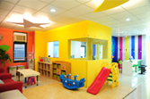
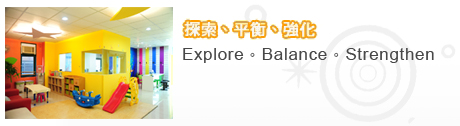
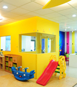

本中心特色:
- 由醫療專業人員實際參與兒童發展相關課程之授課。
- 課程皆以小班教學，課程內容以孩童現況量身設計。
- 醫療級的專業，兒童發展評量，可隨時掌握每個階段的成長現況。
- 一般能力開發外，兒童發展的瑕疵，如感覺統合失調、情緒管理不佳、好動易分心等，可一併納入課程處理。
本中心成立於民國九十四年三月十五日，由一群熱愛兒童的醫療專業人士所組成，深具兒童發展專長。課程以『探索、平衡、強化』為出發點，並以達到身、心、靈完美的提昇為使命，期待藉兒童心智能力的成長，為社會風氣之導正貢獻一份力量。
在高度競爭的社會環境中，20%的菁英份子將掌握80%的社會成就及資源，因此兒童3Q的具備—EQ(情緒智商)、CQ(創意智商)、MQ(道德智商)不但是進軍菁英的重要關鍵，而且是安定社會的主要能量，有鑒於現今兒童多重物資的享受、功利之追求，導致思想、行為的偏差。 本中心精緻的課程內容加上專業的醫療人員授課，不但落實兒童3Q能力的啟發，並能隨時看護兒童發展的過程，讓兒童贏在起跑點。